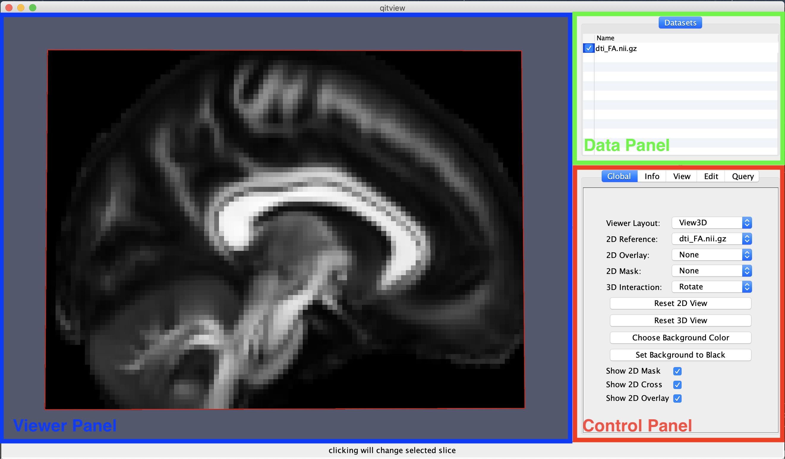
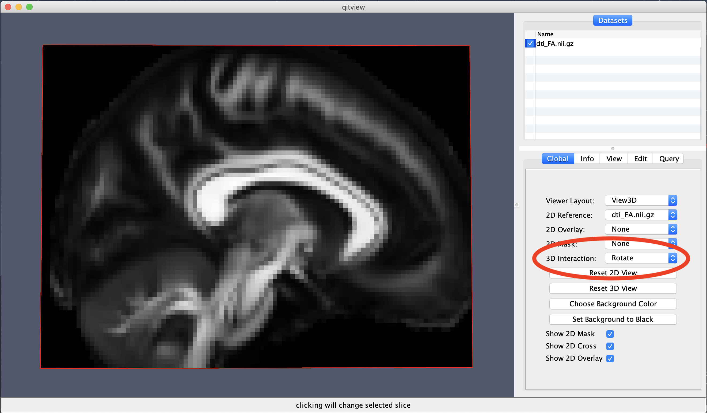

Interacting with data in QIT
qitview is a 3D data exploration tool that supports many ways to interact
with data. The following sections describe qitview‘s interaction model
and list the various specific interactions that are available for each
Datasets.
Interaction Model

qitview‘s user interface consists of three main panels (shown above): the
Data Panel, the Control Panel, and the Viewer Panel. You can
interact with all of these panels to change how your data is rendered on the
screen, but you should know a little bit about how they work to use them
effectively.
The Data Panel is important for choosing which Datasets you are controlling, specifically you have to select the item in the list so that it is ‘’highlighted’‘. Once highlighted, the Control Panel will be updated to show controls for that specific dataset under the Info, View, and Edit tabs. After highlighting a dataset, the Viewer Panel will also accept mouse interactions that are applied only to the selected dataset. For example, if you use a mouse action for drawing, it will only apply to the selected dataset. There are also a few ‘’global’‘ mouse interactions in the Viewer Panel that are not applied to the highlighted datasets (for example rotation, panning, and zooming), and these are clearly indicated below.
When using the mouse in qitview, you can choose among different
interactions by pressing mouse buttons, by moving the mouse, and holding
down modifier keys while you do either. The Primary, Secondary, and
Tertiary mouse buttons are described below, and these are the same as
the Left, Right, and Middle buttons on a typical mouse. When
moving the mouse, there are a few actions: a Hover of the pointer over a
data object, a Click of a mouse button on a specific part in the scene,
or a Drag of the pointer across the viewer panel while holding down the
mouse button. You can also modify the mouse action by holding either
Control, Shift, Alt, or some combination of them (note: on
macOS, you can use Option instead of Alt). Besides using the mouse,
there are also menus and keyboard shortcuts that can change the view and
modify datasets. The keyboard shortcuts are discussed below, and you are
encouraged to explore the menu options, which can be found both on the
system menu bar and in contextual menus that can be shown by right clicking
on specific datasets. So that’s the big picture for interacting with data
in qitview. Next, we’ll dig into the various specific interactions that
are available.
Global Interactions
You can use the following interactions to change the camera:
-
Primary Button + Drag: Rotate the camera
-
Control + Primary Button + Drag: Zoom in the camera (translate it towards the stage)
-
Secondary Button + Drag: Zoom in the camera (translate it towards the stage)
-
Shift + Primary Button + Drag: Pan the camera (translate in the plane orthogonal to the view)
-
Tertiary Button + Drag: Pan the camera (translate in the plane orthogonal to the view)
You can also double click the primary mouse button on the 3D model in the Viewer Panel and that will select it in the Data Panel. There are data-specific interactions that are only available when a data object is selected in the list, so the double-click feature will allow you to quickly select and then interact with your data object of choice.
Dataset interactions
The following interactions will be applied only to the dataset that is highlighted in the Data Panel. While the options are complex, one general rule is that Alt is used for mouse interactions that are applied to the highlighted dataset, and otherwise, they mouse interaction is global in nature.
Volume Interactions
- Alt + Drag: Slice the volume (based on where you clicked). This will show a red line indicating which slice is being modified.
-
Alt + Shift + Hover: Query the coordinates and data value of the selected voxel. This will show red crosshairs and box around the selected voxel.
-
Right/Up Arrow: Increment the slice of the selected
VolumeorMask. - Left/Down Arrow: Decrement the slice of the selected
VolumeorMask. - Shift+Right/Up Arrow: Fast Increment the slice of the selected
VolumeorMask. - Shift+Left/Down Arrow: Fast Decrement the slice of the selected
VolumeorMask.
Mask Interactions
- Alt + Drag: Slice the volume (based on where you clicked). This will show a red line indicating which slice is being modified.
- Alt + Shift + Hover: Query the coordinates and data value of the selected voxel. This will show red crosshairs and box around the selected voxel.
- Alt + Control + Drag: Draw on the
Mask. Depending on the drawing mode, this will show either a stencil grid or the freehand polygon path. The drawing label and mode can be specified in theMaskcontrol panel. - Alt + Shift + Control + Drag: Erase the labels of the
Mask. Depending on the mode, this will show either a black stencil or a black freehand polygon path.
Solids Interactions
- Alt + Drag: Move the selected solid (i.e. a translation). A red circle will be shown in the center of the solid to indicate which one was selected.
- Alt + Shift + Drag: Resize the solid (i.e. change the sphere radius or box dimensions). If you select a sphere, it will change the radius, and if you select a box, it will grow or shink the side you selected. A red line will indicate what you selected.
- Alt + Control + Click: Create a new solid. The type and size of the new solid can be specified in the control panel. A blinking red circle will be shown before clicking the mouse to indicate where the new solid will be placed.
- Alt + Shift + Control + Click: Remove the selected solid. Before you click the mouse, the selected solid will blink to indicate it is about to be removed.
Curves Interactions
- Alt + Shift + Drag: Query the curves. The selected curves will be highlighted in red.
- Alt + Shift + Control + Drag: Remove the selected curves. Before you click the mouse, the selected curves will be highlighted in red.
Mesh Interactions
- Alt + Shift + Hover: Query the mesh vertices. The size of the query can be specified in the control panel. The selected vertices will be highlighted in red.
- Alt + Control + Drag: Show only the selected mesh component. This assumes the mesh has a label attribute, which is specified in the
Meshcontrol panel. - Alt + Shift + Control + Drag: Hide the selected mesh component. This assumes the mesh has a label attribute, which is specified in the
Meshcontrol panel.
Vects Interactions
- Alt + Drag: Move the selected vect (i.e. a translation). A red circle will be shown in the center of the vect to indicate which one was selected.
- Alt + Control + Click: Create a new vect. A blinking red circle will be shown before clicking the mouse to indicate where the new vect will be placed.
- Alt + Shift + Control + Click: Remove the selected vect. Before you click the mouse, the selected dot will blink to indicate it is about to be removed.
Manual settings
If for any reason you have difficulty using the mouse and keyboard at the same time, you can also specify the interaction mode using the mouse. You can find this 3D Interaction combo box in the Global tab of the Control Panel. This will include camera interactions, such as Rotate, Pan, and Zoom. You can quickly reset the interaction mode by pressing the Escape key. Note, the 3D Interaction menu will change based on the dataset you have highlighted for example, when a volume is highlighted, there is an interaction mode for changing the image slice.
